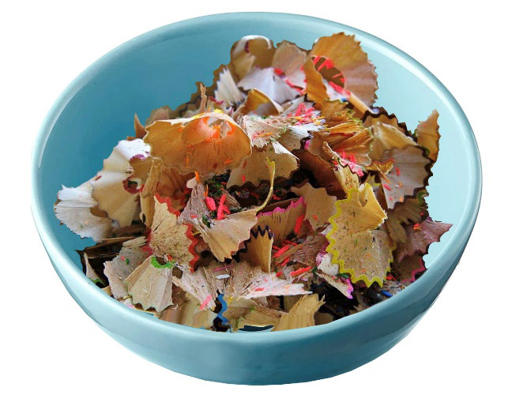
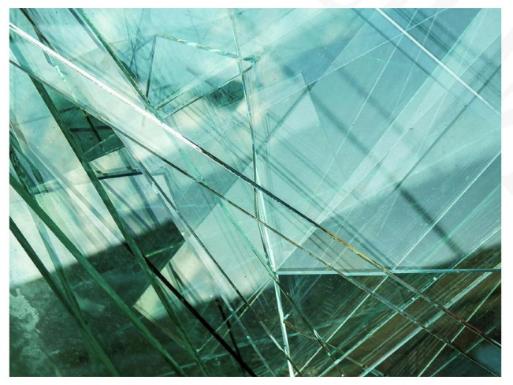

Figure 6.5: Pencil waste
Sharp implement wastes
Objects which are sharp such as knives, razor blades, and broken glass should be packed in a puncture-proof jar or box and placed in the regular trash bin. This pre-packaging activity will reduce risks to all who are involved in the disposal. Pre-packaging helps to avoid injury to juniors or others handling the trash. Figure 6.6 Sharp implement wastes.

Figure 6.6: Sharp implement wastes
Empty container wastes
The empty containers have to be either recycled for other uses after being rinsed or been kept as regular trash waiting for disposal. Figure 6.7 shows an empty container for colours.